Tweet
Tweet
As scanners aren’t just used for OCR, the wide variety of scanner models with varying characteristics is no surprise. Scanners are used for graphic applications by professional prepress companies, by large companies for electronic document management and automated form reading, by executives for the contact management of business cards, by home users for copying and faxing documents and by musicians to convert sheet music into MIDI files.
Electronic document management (“EDM”) brings the dream of a “paperless office” closer. (Or maybe we should speak of an “office with less paper”…?) With such content management systems, information held on paper — correspondence, brochures, invoices etc. — is dematerialized and compactly stored. And that means you can get rid of your filing cabinets or centralized archive. Not to mention that electronic files are easily duplicated — backed up for security reasons, made available to foreign branches, copied on CD-ROM or DVD to be consulted on laptops by sales managers etc.
As the documents are properly indexed, their searching and retrieval via a workstation is very quick, not to say instantaneous. Searching is based on the location of the documents in the electronic archive or on the content of the documents. You enter keywords to find the relevant document. Or you enter any word or phrase that occurs inside the documents when a “full-text” index was created of your document collection. (This kind of indexing implies OCR to extract searchable text from the scanned images and has no counterpart in the physical world!)
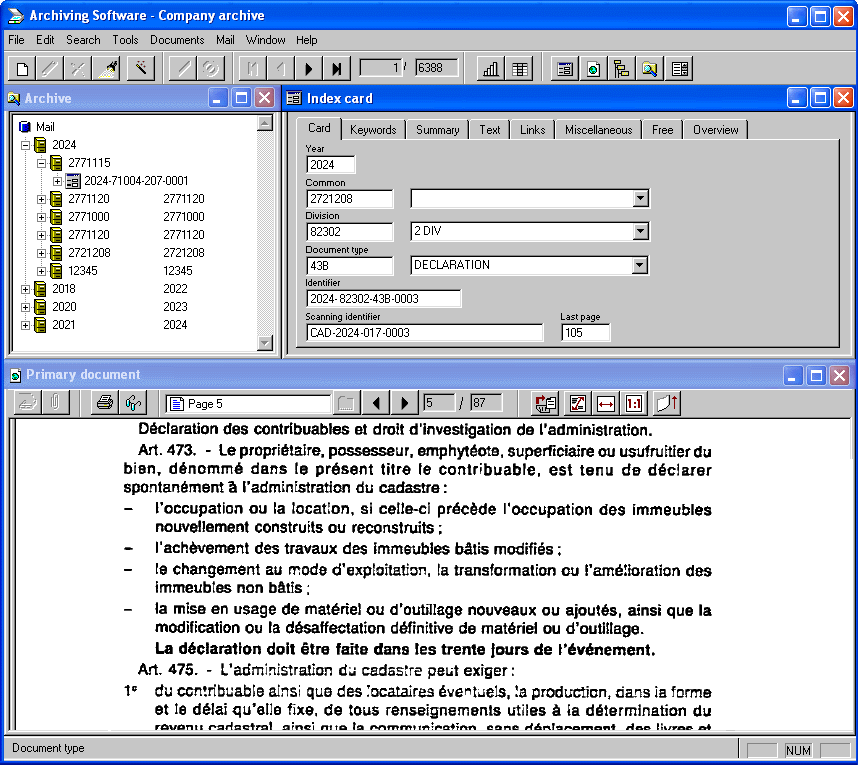
It’s certainly a lot more efficient than filing and finding back paper documents in a central archive — if the document wasn’t retrieved by somebody else or misfiled and hence lost in the meanwhile…
The human factor accounts for many further advantages of electronic document management: you can set access rights to distribute confidential information only on a “need to know” basis, you can track who consulted which documents when, you can distribute new or updated information quickly by e-mail and apply “change control” to see to it that the system only contains the latest information.
Automated form reading is close to OCR. In fact, text recognition is used to read the printed text of the address printed on the form for instance, but completed by Optical Mark Reading (“OMR”), bar code recognition and recognition of handwritten data. Recognition of handwritten text is called “ICR”, short for “Intelligent Character Recognition”.
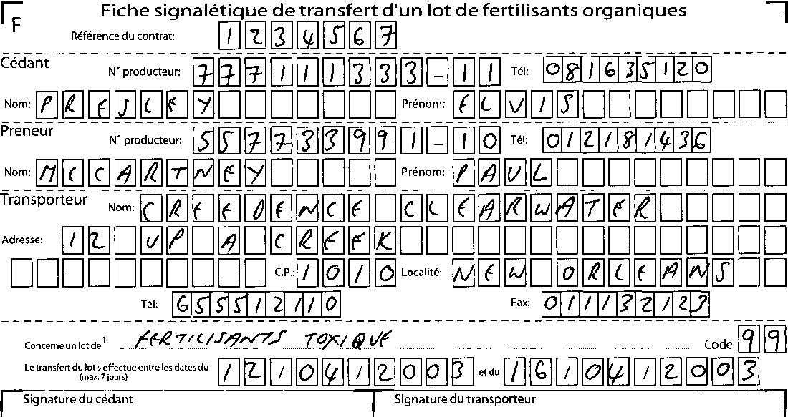
With form reading, the processing workload is reduced drastically and operational costs are brought down to the minimum: the costs of manual data entry are reduced by a factor of 3 to 20. Optical reading projects are profitable as soon as you scan 300 forms per day!
Forms have a fixed layout, and that’s not always the case for the documents to be read: invoices and receipts certainly come in all forms and all shapes. Still, the technology exists that allows to read them!
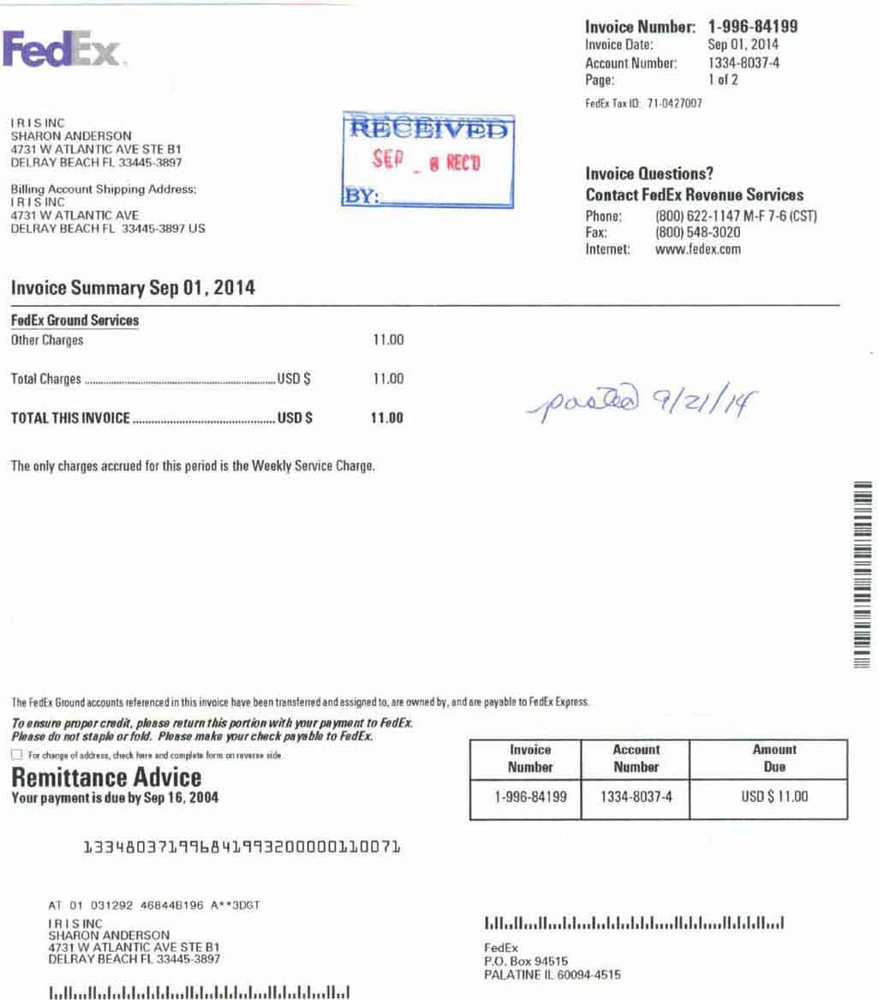
(When processed electronically, the stamp “Received” and note “Posted” on the invoice would actually be replaced by their electronic counterparts...)
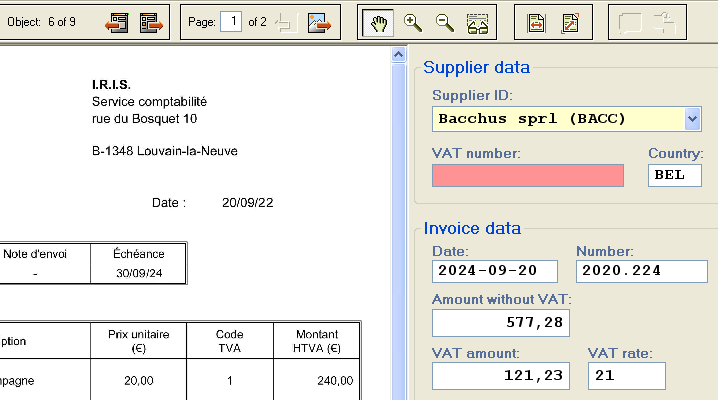
The data extracted by the invoice recognition get transferred to your company’s bookkeeping or ERP software; scanning receipts is an efficient way to monitor your family’s budget (think of house improvement projects, for instance) and establish tax reports, generate expense reports reimbursed by your employer etc.
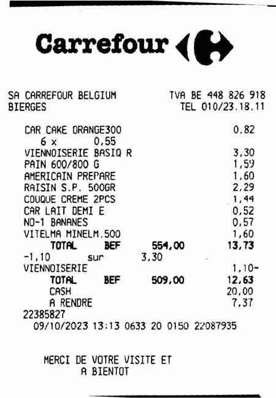 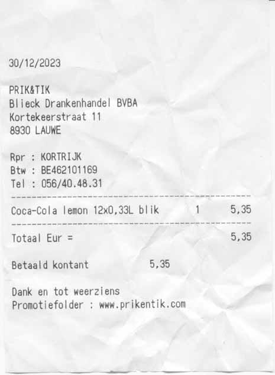
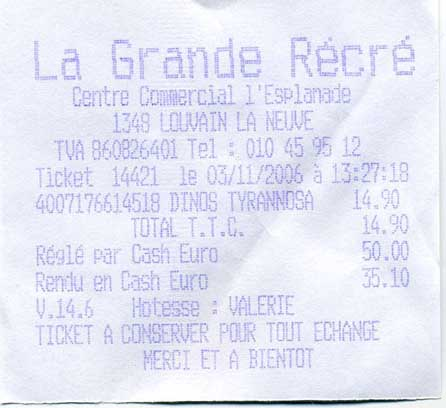 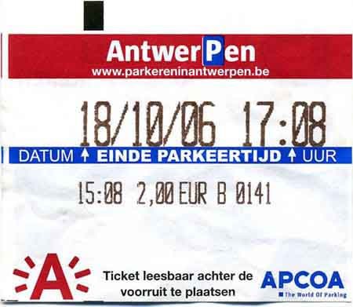
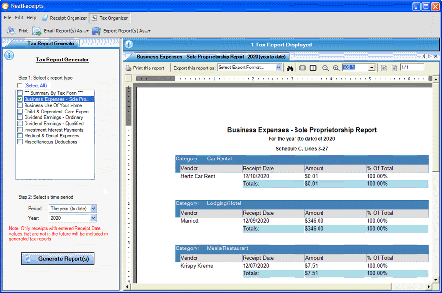
Business card organizers combine OCR functionality with archiving. The scanned business cards are stored in an image database — thus giving you an electronic Rolodex. But why bother typing the data of your contact — company name, job title, address, web site etc. — when a click on the “Recognize” button can convert the scanned business card into an address contact automatically? As a result, you have a real contact database — where searching for cards, sorting them, printing of address lists etc. are just a click away.
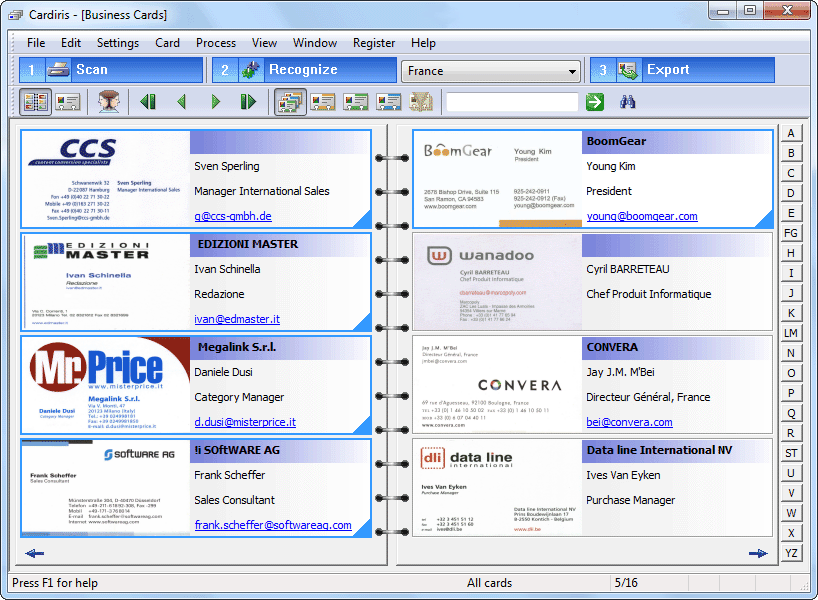
And storing data with your business card organizer isn’t the end! All business card organizers allow you to transfer the acquired contacts to contact managers such as your Windows Contacts, contact apps on smartphones, the “heavy”, “professional” customer relations managers (“CRMs”) (such as Salesforce and Microsoft Dynamics CRM), databases or even word processors whose mail merge function allows to print letters, envelopes and labels. You could be carrying around those contacts you just scanned on your smartphone, for instance!
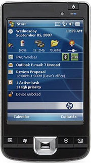 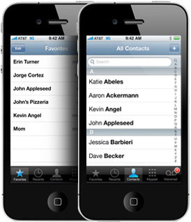
Copying and faxing documents is another application of scanners. How does it work? Copying documents with a scanner is feasible if you’ve also got a printer. You digitize the document with your scanner and print x copies of the image with your printer. And if you own an “all-in-one” device, also called a “multifunctional peripheral” (“MFP”), the scanner and printer are combined in a single device!
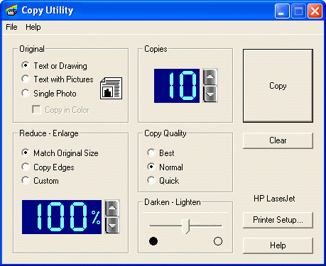
Scanning documents to copy them even has some advantages over the traditional xerox copiers: you can crop the image to remove the black borders you can’t avoid with real copy machines, quickly remove the black holes caused by the staple holes, erase the ad in the 3rd column that bothers you etc.
Faxing documents with a scanner uses the same logic: you scan an image and send it to your fax-modem driver. Or — once again — you have an “all-in-one” device that combines a printer with a scanner and possibly a fax machine!
There are many software utilities dedicated to these simple but useful tasks; their philosophy is that you can avoid extra hardware — a copy machine and a fax — on your desk or in the office by using your scanner creatively.
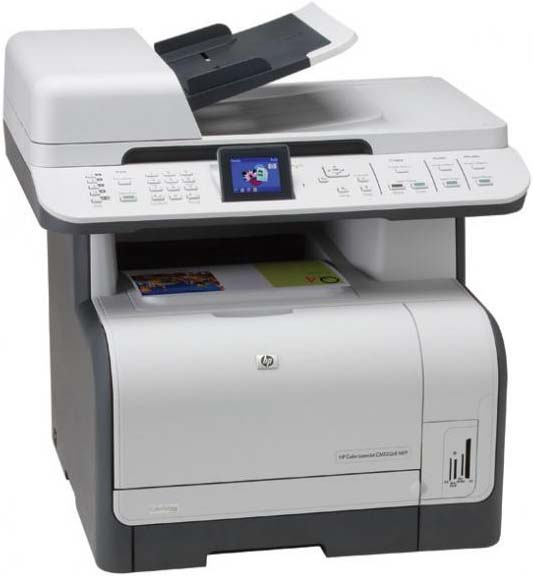
There’s one last application I’d like to mention, a very cute one — music OCR or music scanning. This application used to be called music recognition but that term has been hijacked lately by smartphone apps that recognize which song is being played. You for instance hold your cell phone up to a speaker and the music searches an on-line database to figure out which artist, song etc. is being played.
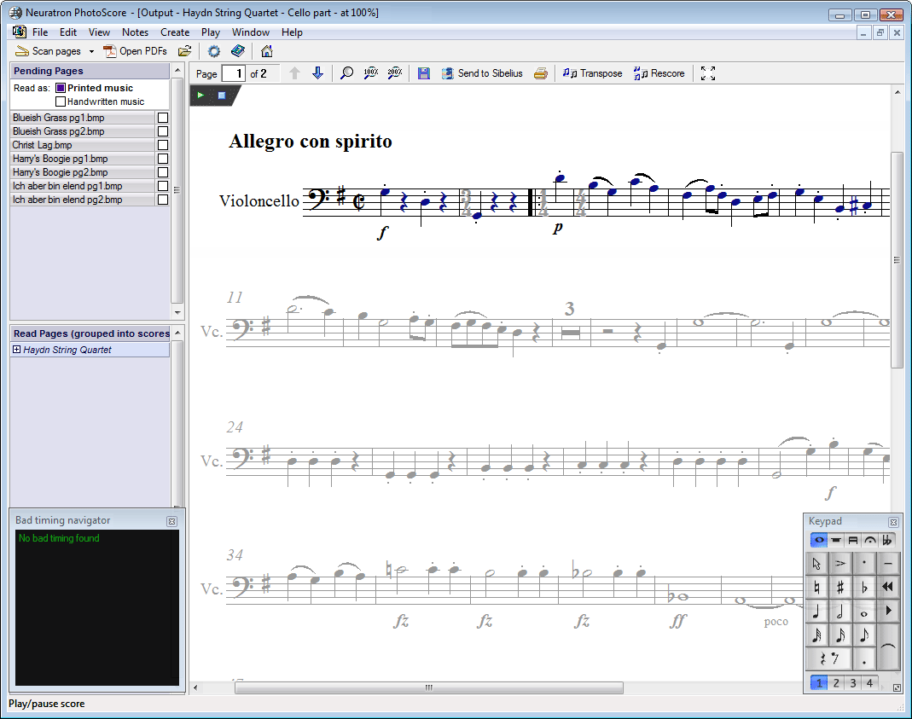
I mean something different here: you scan printed sheet music and let the music OCR software loose to convert the pixels into digital MIDI files!